Open Street Data OSM
Step 1: Download street center ines
Move all Manning’s n Roughness related rasters into the Manning’s Group.
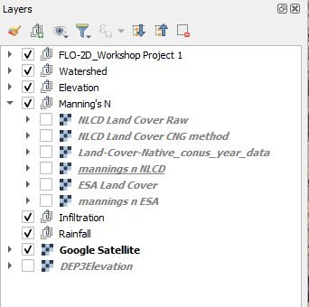
Open Plugins → Manage and Install Plugins and install QuickOSM (or OSM Downloader) if it is not already enabled.
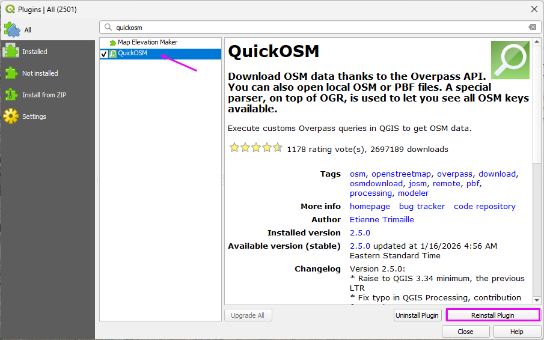
Open the tool:
Vector → QuickOSM → QuickOSM
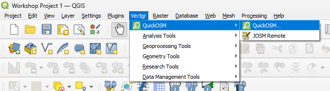
Use the Map Preset tab and select Urban for Streets and Buildings.
Use the current map canvas extent so the download matches the project domain.
Click Run Preset.
Note
if a timeout error occurs, run the preset again.
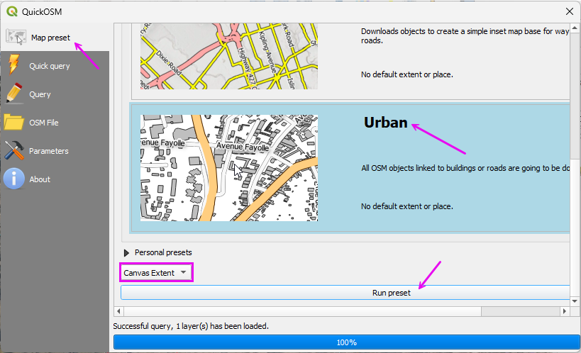
Select the streets that are inside the Watershed Boundary.
Run the Select by location tool.
Fill the fields as shown and click Run.
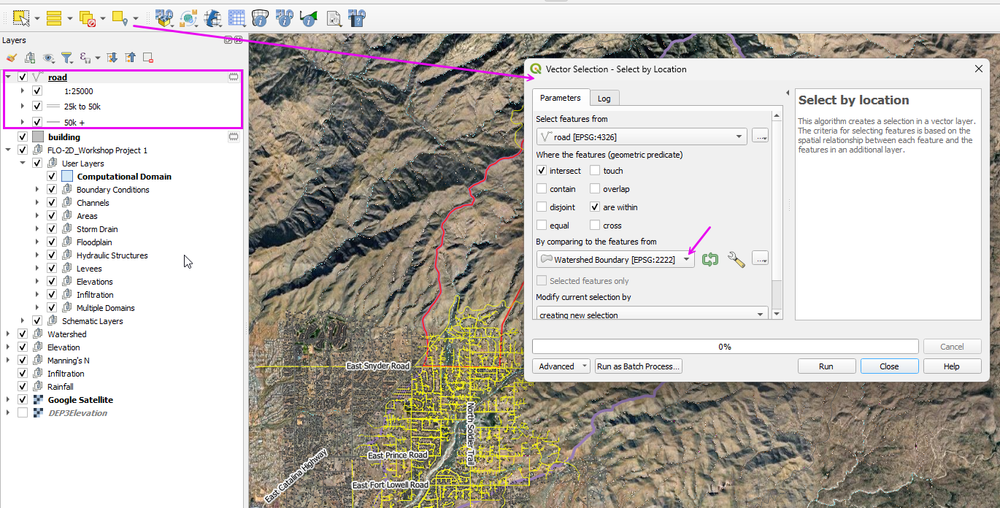
Invert the selection.
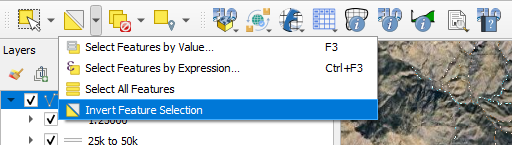
Toggle the editor.
Delete the Selected Streets.
Save the edits.
Toggle the editor off.
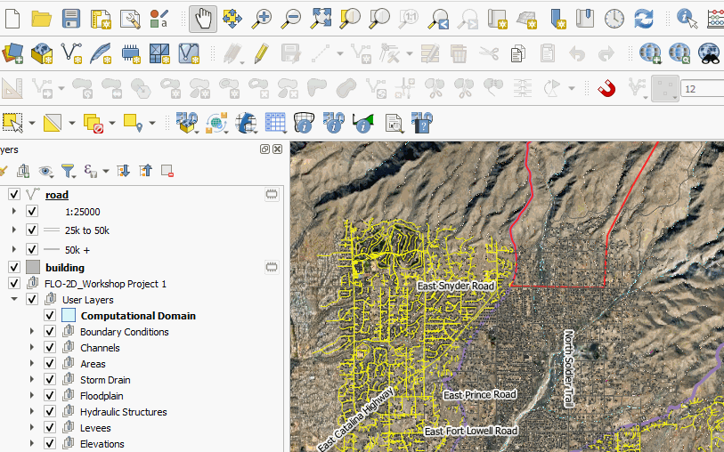
Step 2: Re-project and Export Street Layer
The street layer must be in the project coordinate system before buffering. If it remains in WGS84 (EPSG:4326), the buffer distance will be interpreted in degrees and will not produce correct results.
Right-click the Roads layer.
Select Export → Save Features As.
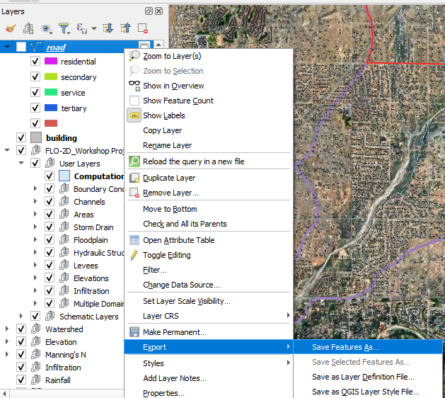
Set Format to:
ESRI ShapefileSet the Coordinate Reference System (CRS) to:
EPSG:2222Choose an appropriate file name and save location.
Check Selected Features.
Click OK.
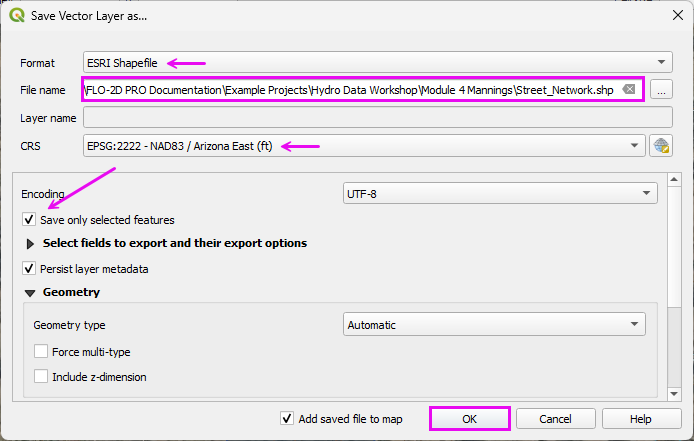
The street layer is now in projected units (feet), and buffer distances will be applied correctly in the next step.
Step 3: Create street layer buffer
Run the Buffer tool from the Processing Toolbox.
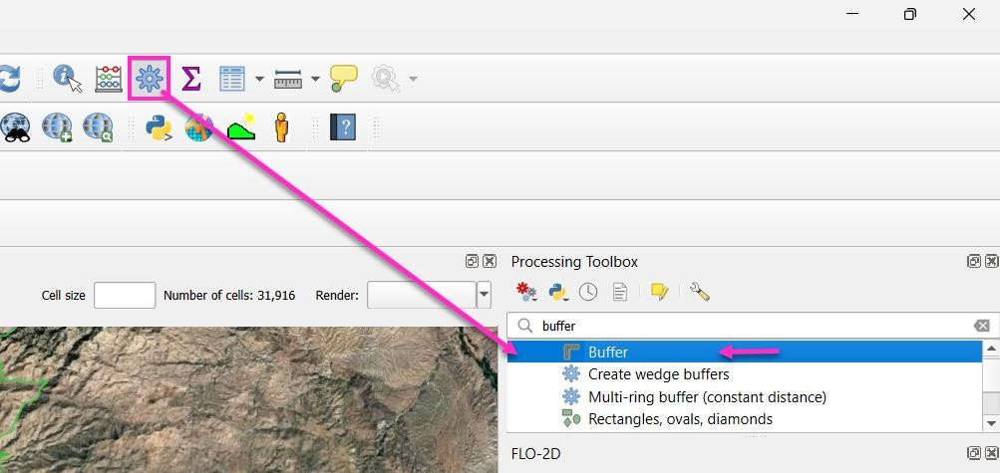
Load the Street Network in the editor and set the buffer distance to Edit Expression.
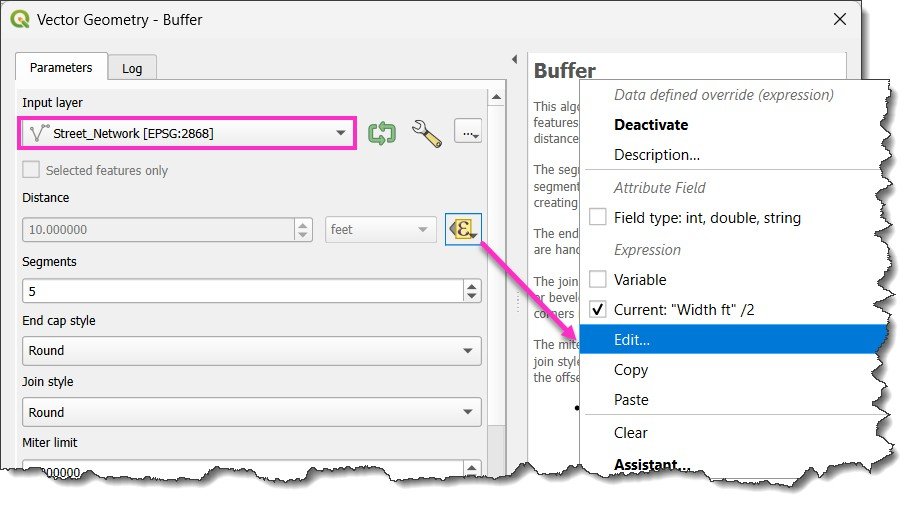
Copy code into the Expression Editor to determine the buffer width by street type.
CASE
WHEN "highway" = 'primary' THEN 40
WHEN "highway" = 'secondary' THEN 30
WHEN "highway" = 'tertiary' THEN 25
WHEN "highway" = 'residential' THEN 20
WHEN "highway" = 'service' THEN 15
ELSE 15
END / 2
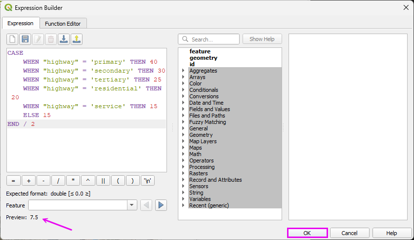
This results in a polygon layer that covers the streets. If some streets are missing, it is easy to digitize them directly into the street network.
Step 4. Add Buffered features into the Roughness layer
Click the Buffered Layer to activate the layer.
Select all features in the layer.
CTRL-c copies the features.
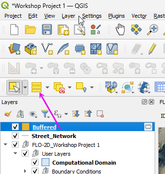
Select the Roughness layer and toggle the Edit Pencil on.
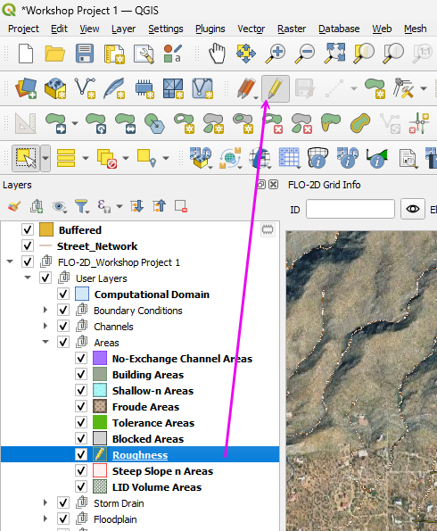
Ctrl-v pastes the features into the roughness layer.
Save the edits and toggle the Edit Pencil layer off.
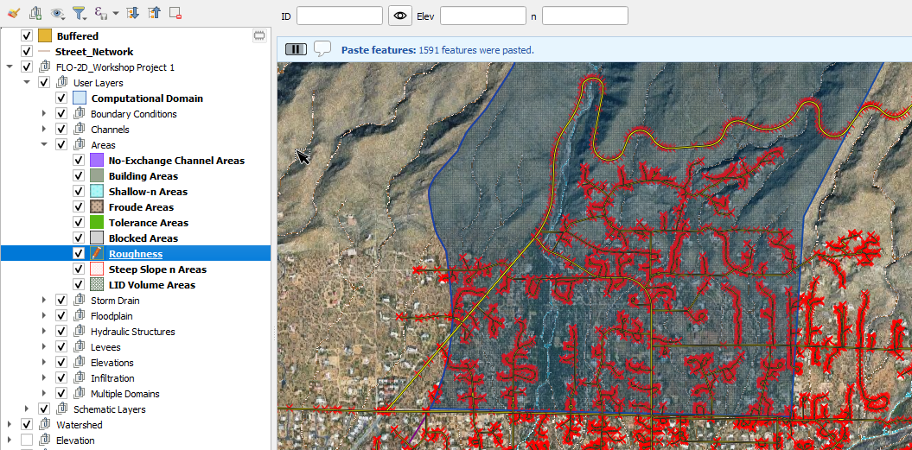
Open the attribute table of the Roughness layer.
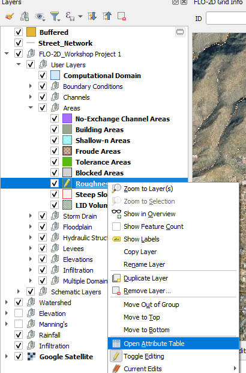
Toggle the Edit Pencil on.
Change the field selector to n
Type 0.02 in the combo box.
Click Update All.
Click the Save Button.
Toggle the Edit Pencil off.
Close the table.
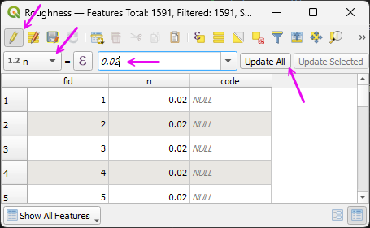
Step 4. Sample roughness layer to the grid.
Sample the roughness polygons values to the Grid.
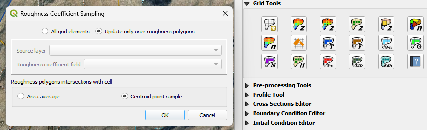
Remove the Buffered layer.
Organize all roughness layers to the Manning’s n group.
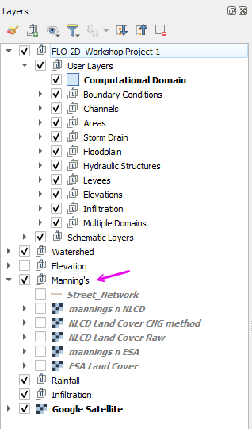